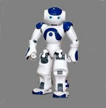
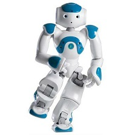
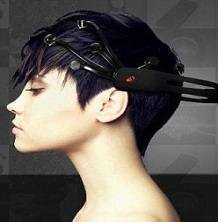
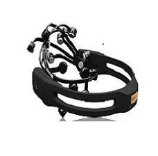

实验室简介
河海大学认知与机器人实验室是“河海大学-法国Aldebaran Robotics联合实验室”的依托单位。实验室瞄准物联网应用技术与未来老龄化社会中机器人服务的关键科学问题与技术难题，综合运用认知启示的非机构化数据处理、数学优化、压缩感知、机器学习等方法，重点研究：1）人机自然交互新技术与信息处理，2）基于视觉的人机互动，3）网络环境中机器人控制与信息融合，4）特定人变声语聊与情感计算。实验室部分研究内容列入江苏省2011提升计划。
实验主要研究人员作为负责人主持国家863计划课题。国家自然科学基金等纵向项目10项，作为主要研究人员参与国家重大基础研究计划（973）项目等纵向项目10项；相关技术获得国家授权发明专利4件，受理8件；出版中英文专著3部（含撰写章节）。
实验室近年与加拿大Winsor大学，俄罗斯科学院，德国Oldenburg大学，北京大学，西安交通大学，新加坡南洋理工大学，香港理工大学等国内外知名研究机构和课题组建立实质的合作关系。
实验室基础设施
Nao是一个高58公分的机器人，是Aldebaran Robotics公司花费了三年时间的研究成果。它是各种硬件和软件以独特的方式组装成的一种产品，并有着讨人喜欢的外观设计。它可以在Windows、Linux或MacOS等多种平台上编程，全部借助最新技术设计，所以动作连贯并带有品种多样的传感器。  
Emotiv头盔是利用脑电波控制计算机软件的一种头盔装置，这种头盔装置可以“阅读”人类大脑思想，同时，该头盔装置的配套软件能够将人们的梦想转变为现实具体化。Emotiv头盔能够探测感知人们的情绪，无论是感到厌烦或者兴奋，以及是否集中精力地处理工作任务，或者处于放松休闲状态。同时，该装置通过大脑还能发现人体肌肉的状态，因此它能够发现笑容或者皱眉，以及一些相应的动作反应。该系统最显著的特点是能够获得脑电图描记脑电波，使用者可以很快熟悉这个软件系统，来理解不同的脑电波图案。  
实验室基础设施还包括Kinect体感设备，以及一系列硬件开发设备。Kinect是微软在2010年6月14日对XBOX360体感周边外设正式发布的名字。伴随Kinect名称的正式发布，Kinect还推出了多款配套游戏，包括Lucasarts出品的《星球大战》、MTV的跳舞游戏、宠物游戏、运动游戏《Kinect Sports》及赛车游戏等。